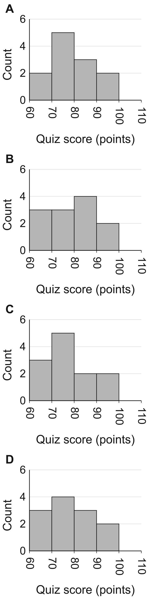

Three teaching visuals at230px image width
apprecalc-oht-1.3
Piecewise-linear graph of f on labeled x and f(x) axes.
0
1
2
3
4
5
6
7
0
2
4
6
8
x
f(x)
APSTATS-OHT-1.4
Two Pop-only bar panels: freshman counts and senior percentages.
Freshmen: n = 200
0
50
100
150
200
60
Pop
Count
Seniors: n = 50
0
25
50
75
100
40
Pop
Percent
Pop category only
APSTATS-OHT-2.1
Equal-total segmented percentage bars for Chess and Art meeting preference.
Meeting preference
0
25
50
75
100
Percent
40%
60%
Chess
75%
25%
Art
Online
Not online
All four histogram choices, natural height
